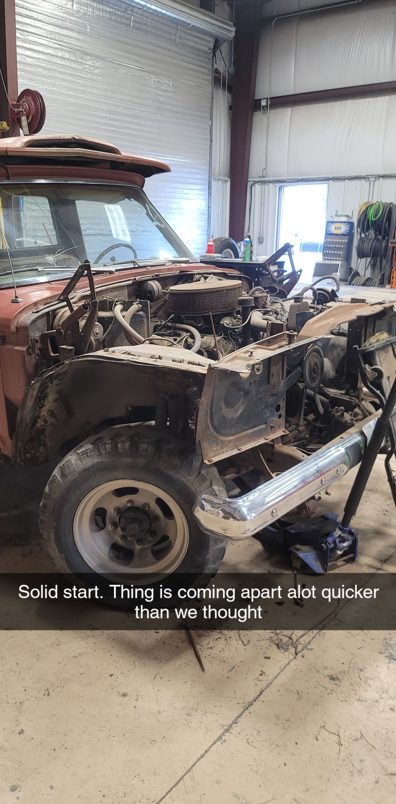
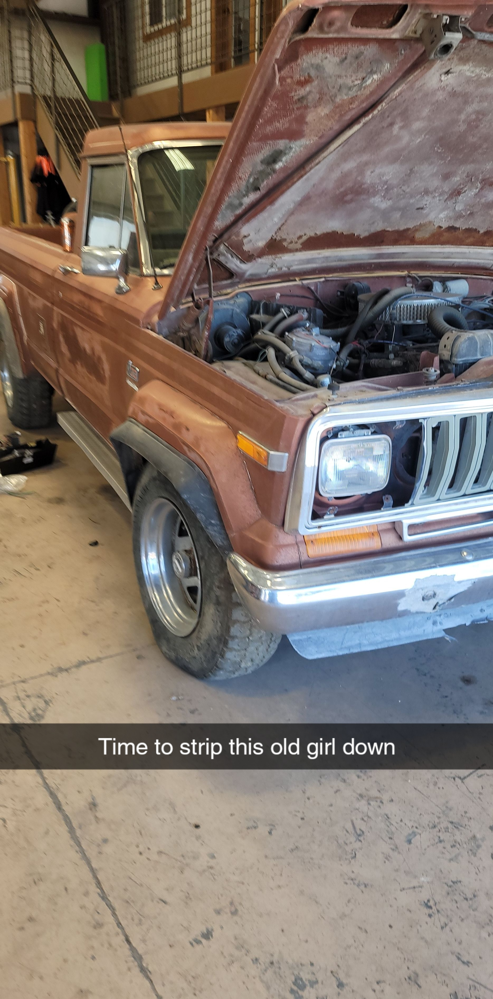
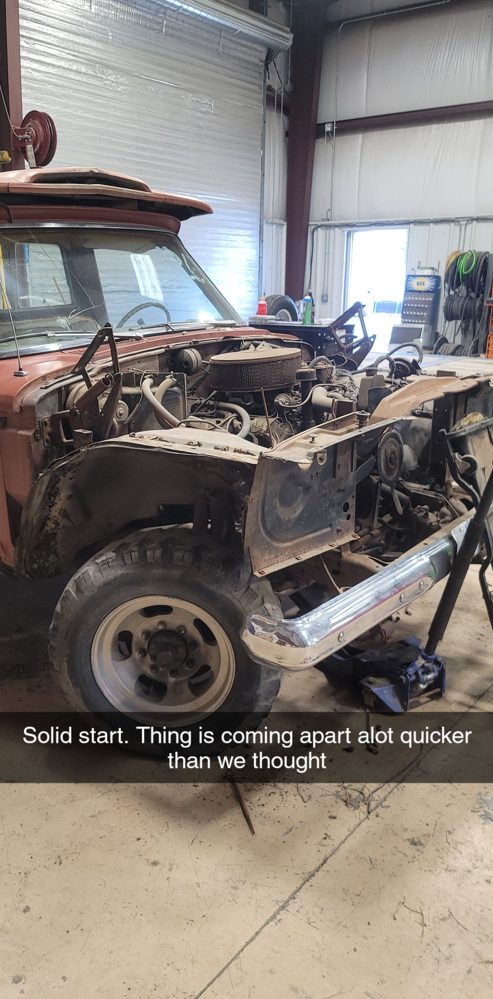
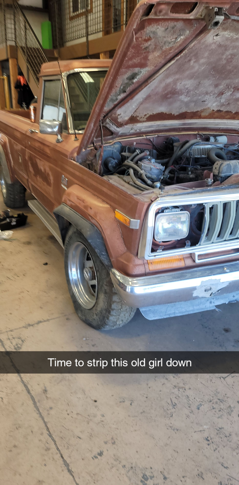

About Me
Hello! My Name is Joseph Echegaray, however I generally go by Joe. I am 32 Years old and currently taking a Front End Software Development Course to add to my knowledge. I currently work as an Underground Miner at a Gold Mine, and I also am a volunteer Firefighter and Advanced EMT. I have been working to make a business of my own on the side doing Website Development specifically targeted for Small Businesses, StartUps, and Non-Profit Agencies at reasonable costs, and I am taking this course to further my knowledge to be able to further that desire.
I also am looking forward to learning how to develop Web Based Applications, which I believe I can also use to create Web Apps for First Responders and agencies that I work with to optimize certain aspects of the business and responses when calls for service are recieved.
Some of my Hobbies include Music, Vehicle Restoration, Video Games, Computer Building, and I've most recently gotten back into Paintballing which is a fun but constant reminder that I'm not getting any younger. Below are some pictures of me from Paintball Trips over the last couple years, as well as the Jeep J20 that belonged to my grandpa which I am working on rebuilding as a show truck.
Also a fun fact about myself, I volunteer with the Medical Group at Burning Man, This year will be my 5th year as a medical volunteer for the Burning Man Event! It may be hot and dusty out there, but it's alot of fun!
A Few Pictures from hobbies and stuff I enjoy
 


